6 - Água potável e saneamento no Brasil
Como a ODS 6 se aplica no nosso País?
- 35 milhões de brasileiros não têm acesso à água potável segura.
- 100 milhões de brasileiros não têm acesso à coleta de esgoto.
- Os rios brasileiros estão cada vez mais poluídos.
- A escassez de água afeta algumas regiões do país.
Progresso
- Entre 2000 e 2017, 14 milhões de brasileiros obtiveram acesso à água potável segura.
- Entre 2000 e 2017, 40 milhões de brasileiros obtiveram acesso a serviços de saneamento.
Desafios Encontrados
- Crescimento populacional.
- Mudanças climáticas.
- Poluição da Água.
- Escassez de água em algumas regiões.
- Falta de financiamento.
- Falta de capacidade institucional.
- Fragmentação da gestão da água.
Ações Necessárias
- Aumentar os investimentos em infraestrutura de água e saneamento.
- Fortalecer a gestão integrada dos recursos hídricos.
- Promover a mudança de comportamento para uso eficiente da água.
- Ampliar a cooperação entre os diferentes entes federativos.